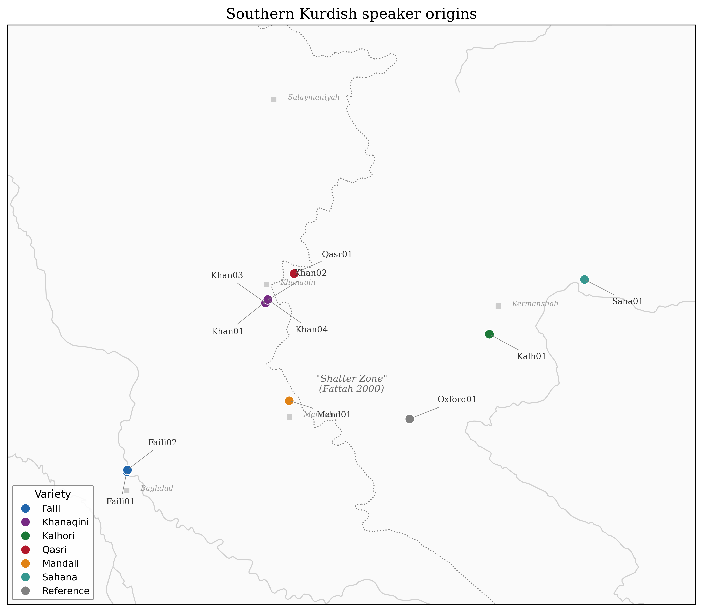
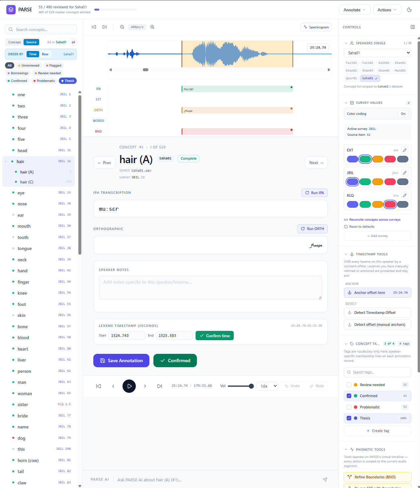
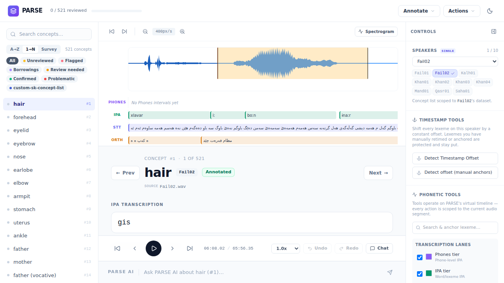
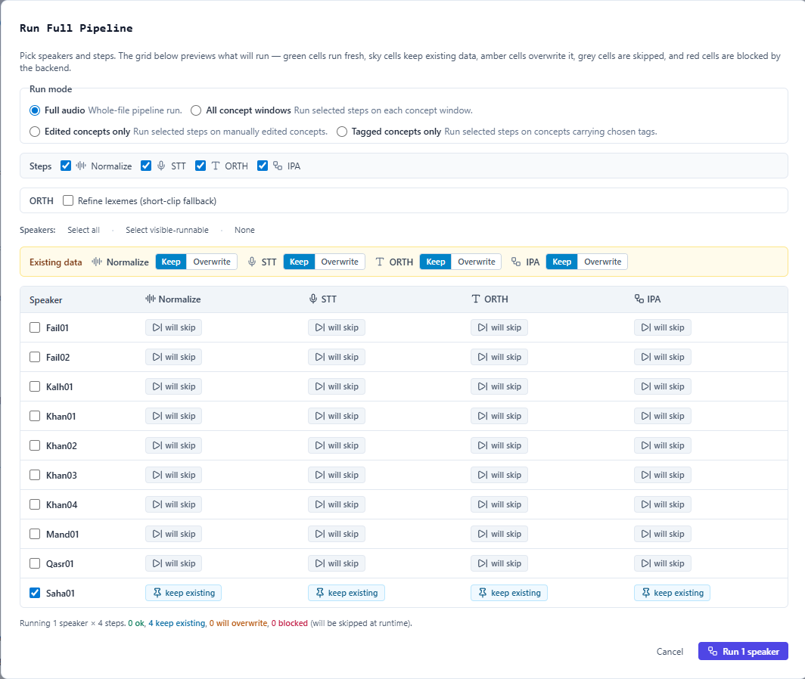
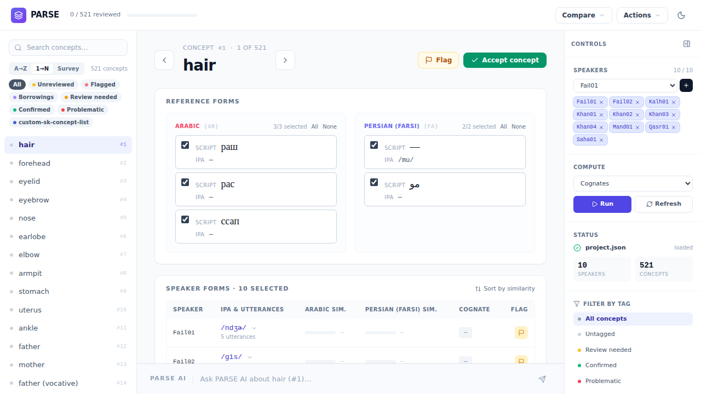
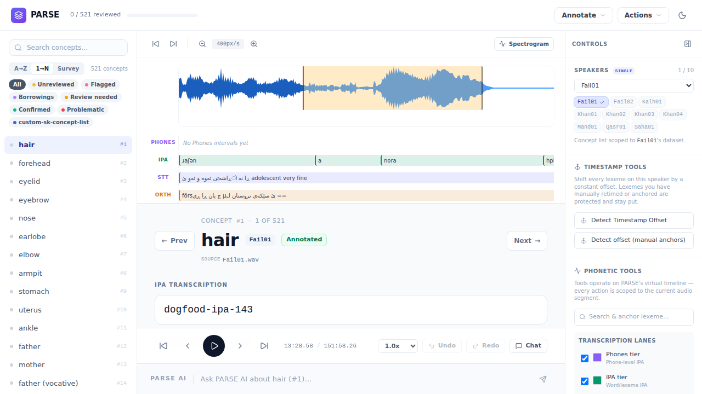

A talk on computer-assisted fieldwork
Building a Southern Kurdish dialect tree with PARSE.
Lucas Ardelean · University of Bamberg · 2026
The classification puzzle

Why a "press the button" AI does not work here
A guiding principle
The machine narrows the search. The linguist makes the judgment.
It locates likely regions in long recordings and offers a candidate transcription.
Every accept, edit, or rejection is an explicit human action.
The system never commits a transcription or a cognate decision on its own.
Computed result and human correction are stored as separate layers — auditable forever.
— after Computer-Assisted Language Comparison (List 2016)
Where AI sits in the pipeline
Find where each target word lives inside 2–5 h of conversation per speaker.
AIGenerate a candidate phonemic transcription as a second opinion to the linguist's own.
AICluster forms across speakers using sound-correspondence patterns derived from the data.
ComputationalBayesian inference yields a probability-weighted distribution over dialect topologies.
ComputationalJob 1 · Locating

Job 2 · Cross-checking

Job 3 · Anchoring

Job 4 · Adjudicating

PARSE — the workstation that keeps the human in charge

What this gets me — and what it doesn't
Why this might matter for language assessment
In assessment, the rater's judgment is the result. Audit trails and second opinions matter more than raw accuracy.
The same pattern — scout, second opinion, human-owned decision, full provenance — applies wherever expert judgment doesn't scale. Proficiency rating, error coding, dictation, oral-task transcription. The tool may not transfer; the discipline does.
PARSE — github.com/ArdeleanLucas/PARSE · MIT licensed
Thank you. Questions welcome.